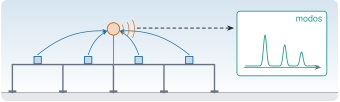
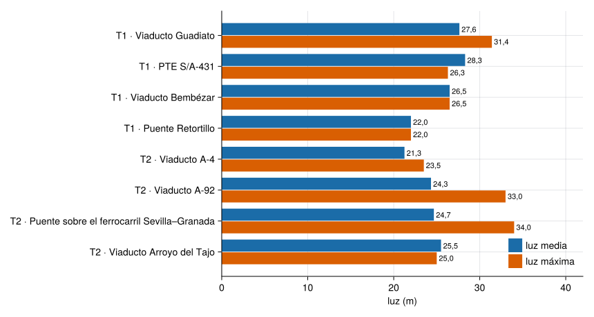
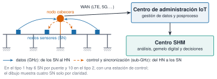

R3 · Proyecto de monitorización de puentes de alta velocidad

SMART-BRIDGES es un proyecto de investigación para monitorizar de forma continua puentes ferroviarios de alta velocidad con una red de sensores inalámbricos con energía autónoma. Esta página resume el proyecto: quién lo hace y para qué, en qué puentes, con qué sistema, qué datos genera y cómo se accede a ellos. Su caso piloto, el viaducto Guadiato de la LAV Madrid–Sevilla, tiene su propia página (R4).
Ficha
Título
Monitorización inteligente del estado estructural de puentes ferroviarios de alta velocidad
Referencia
PLEC2021-007798, convocatoria de Proyectos de I+D+i en Líneas Estratégicas de 2021 (Castro Triguero 2021)
Ministerio de Ciencia e Innovación y Agencia Estatal de Investigación, Plan de Recuperación, Transformación y Resiliencia (NextGenerationEU) (Universidad de Córdoba 2026)
Puentes
Ocho demostradores: cuatro en la LAV Madrid–Sevilla y cuatro en la Córdoba–Málaga (Castro Triguero 2021)
SMART-BRIDGES es el proyecto «Monitorización inteligente del estado estructural de puentes ferroviarios de alta velocidad», con referencia PLEC2021-007798, de la convocatoria de Proyectos de I+D+i en Líneas Estratégicas de 2021 (BOE n.º 98, de 24-04-2021). Lo coordina la Universidad de Córdoba (coordinador: Rafael Castro Triguero) en un consorcio con la Universidad de Granada e Ineco, y lo financian el Ministerio de Ciencia e Innovación y la Agencia Estatal de Investigación con cargo al Plan de Recuperación, Transformación y Resiliencia, con fondos NextGenerationEU (Castro Triguero 2021; OTRI, Universidad de Granada 2026; Universidad de Córdoba 2026). La ficha de la OTRI de la UGR nombra como investigador principal a Rafael Gallego Sevilla, de la UGR: en un proyecto coordinado cada equipo tiene el suyo.
La memoria parte de que la gestión de infraestructuras envejecidas es un reto de primer orden: cita unos 2.600 km de alta velocidad en España y 207 puentes críticos, parte de ellos con algún tipo de degradación, y una tasa de reposición muy baja. Su propuesta es extender la vida útil de los puentes ferroviarios de alta velocidad mediante una red de sensores inalámbricos con energía autónoma, monitorización estructural a largo plazo y decisiones basadas en datos (Castro Triguero 2021).
Ingeniería de referencia de Adif para la inspección y monitorización de puentes y viaductos; caracteriza los puentes y define los requisitos de monitorización.
UCO
Comunicaciones, redes de sensores inalámbricos e internet de las cosas (IoT); sincronización y dispositivos de bajo consumo.
UGR
Monitorización de la salud estructural, análisis modal operacional, identificación de sistemas, captación de energía y pronóstico basado en datos.
caracterizar los puentes envejecidos, con sus patologías y tipologías más comunes, y crear modelos digitales de referencia;
diseñar una red de sensores (IoT) eficiente, fiable y sincronizada para monitorizar de forma continua;
desarrollar algoritmos de identificación para analizar el estado dinámico del puente con poco gasto de energía;
crear un sistema que recoja energía del entorno (vibraciones) para alimentar los sensores;
construir un gemelo digital que ayude a diagnosticar y a decidir el mantenimiento;
validar todo en un puente ferroviario envejecido de alta velocidad (el demostrador).
Los ocho puentes
El proyecto eligió ocho puentes de alta velocidad de vano corto o medio, de dos tipologías, como demostradores. La memoria técnica de la solicitud (Castro Triguero 2021) los describe así:
Tipo 1 (4 puentes, línea Madrid–Sevilla, cerca de Córdoba): vigas en I (entre 5 y 8) con losa de continuidad hormigonada in situ, de 2 a 4 vanos de unos 30 m y con esviaje (los ejes de apoyo no son perpendiculares al eje del puente). Velocidad máxima de línea de 250 km/h. La memoria dice que es una tipología muy particular, poco usada en las líneas posteriores.
Tipo 2 (4 puentes, línea Córdoba–Málaga): dos vigas en U con losa hormigonada in situ, de 32 a 35 m de vano según el texto, con esviaje y 300 km/h de velocidad máxima. Es una tipología más extendida en la red, lo que facilitaría extrapolar los resultados.
println("| Línea | Puente | Provincia | Tipo | Longitud (m) | Vanos | Luz máxima (m) | Luz media (m) | Velocidad máx. (km/h) |\n|---|---|---|---|---|---|---|---|---|\n"*join(["| $lin | $nom | $prov | $tipo | $(coma(L; d=1)) | $n | $(coma(lmax; d=1)) | $(r1(luz_prom(L, n))) | $v |" for (lin, nom, prov, tipo, L, n, lmax, v) in puentes], "\n"))
Tabla 1: Puentes demostradores de SMART-BRIDGES. Longitud, vanos, luz máxima y velocidad, de la tabla 1 de la memoria técnica (Castro Triguero 2021); la luz media es un cálculo propio (longitud entre vanos).
Línea
Puente
Provincia
Tipo
Longitud (m)
Vanos
Luz máxima (m)
Luz media (m)
Velocidad máx. (km/h)
Madrid–Sevilla
Viaducto Guadiato
Córdoba
1
110,5
4
31,4
27,6
250
Madrid–Sevilla
PTE S/A-431
Córdoba
1
28,3
1
26,3
28,3
250
Madrid–Sevilla
Viaducto Bembézar
Córdoba
1
53,0
2
26,5
26,5
250
Madrid–Sevilla
Puente Retortillo
Córdoba
1
22,0
1
22,0
22,0
250
Córdoba–Málaga
Viaducto A-4
Sevilla
2
85,0
4
23,5
21,3
300
Córdoba–Málaga
Viaducto A-92
Málaga
2
73,0
3
33,0
24,3
300
Córdoba–Málaga
Puente sobre el ferrocarril Sevilla–Granada
Málaga
2
74,0
3
34,0
24,7
300
Córdoba–Málaga
Viaducto Arroyo del Tajo
Málaga
2
51,0
2
25,0
25,5
300
Cuidado con la luz media. En el PTE S/A-431 y en el viaducto Arroyo del Tajo sale mayor que la luz máxima, lo que no puede ser con vanos que sumen la longitud total: esta incluye algo más que los vanos (quizá los extremos o el esviaje; la memoria no lo aclara). Por eso \(L/n\) es solo una referencia aproximada, y más cuanto menos vanos tiene el puente.
Ver el código
nombres = ["T$(p[4]) · $(p[2])" for p in puentes]prom = [luz_prom(p[5], p[6]) for p in puentes]maxl = [p[7] for p in puentes]np_ =length(puentes)fig =Figure(size=(860, 460))ax =Axis(fig[1, 1]; xlabel="luz (m)", yticks=(1:np_, nombres), yreversed=true)barplot!(ax, repeat(1:np_, 2), vcat(prom, maxl); dodge=vcat(fill(1, np_), fill(2, np_)), color=vcat(fill(AZUL, np_), fill(NARANJA, np_)), direction=:x)for k in1:np_text!(ax, prom[k], k -0.2; text=" "*r1(prom[k]), align=(:left, :center), fontsize=11)text!(ax, maxl[k], k +0.2; text=" "*coma(maxl[k]; d=1), align=(:left, :center), fontsize=11)endxlims!(ax, 0, 42)axislegend(ax, [PolyElement(color=AZUL), PolyElement(color=NARANJA)], ["luz media", "luz máxima"]; position=:rb, framevisible=false)fig

Figura 1: Luz media (longitud entre vanos) y luz máxima de los ocho puentes de SMART-BRIDGES. Cada puente indica su tipo (T1, T2). Datos de la memoria técnica; luz media, cálculo propio.
El viaducto A-4 mide 85,0 m y tiene 4 vanos, con una luz máxima de 23,5 m. ¿Cuál es su luz media? ¿Es compatible con la luz máxima?
\(85{,}0/4 = 21{,}25\ \mathrm{m}\approx 21{,}3\ \mathrm{m}\). Es menor que la luz máxima (23,5 m), así que es compatible: los vanos no son todos iguales y el mayor mide 23,5 m.
Los rangos que da el texto de la memoria (vanos de unos 30 m para el tipo 1 y de 32 a 35 m para el tipo 2) son orientativos: la tabla da luces máximas de 22 a 31,4 m en el tipo 1 y de 23,5 a 34 m en el tipo 2.
Según la memoria, los modos de flexión y de torsión de la losa de estos puentes están, en los modelos numéricos, entre unos 5 y 10 Hz, un rango adecuado para el análisis modal operacional (OMA) y la monitorización; son resultados de modelo, no medidas (Castro Triguero 2021).
El sistema de monitorización
Según la memoria, cada puente lleva un nodo cabecera (head node, HN) y varios nodos sensores (sensor nodes, SN). El nodo cabecera tiene un acelerómetro triaxial de precisión que dispara el muestreo de los nodos sensores, sensores ambientales (temperatura, humedad y anemómetro), los sincroniza y reduce los datos antes de enviarlos a los centros remotos. Cada nodo sensor lleva acelerómetros triaxiales y una galga extensométrica, guarda las muestras en una tarjeta SD y las envía al nodo cabecera al terminar (Castro Triguero 2021).

Figura 2: Sistema de monitorización previsto en la memoria de SMART-BRIDGES: nodos sensores en el tablero, un nodo cabecera, un enlace de control en sub-GHz y de datos en GHz, y dos centros remotos. Esquema propio a partir de la descripción de la memoria (Castro Triguero 2021).
La memoria prevé instrumentar los 8 puentes con 86 nodos: 64 nodos sensores y 8 estaciones de control para los puentes, más material para laboratorio y de reserva; 6 nodos sensores y 1 estación por puente de tipo 1 y 10 nodos sensores y 1 estación por puente de tipo 2. Como resultado, esperaba la monitorización continua de los ocho puentes y unos 28.000 millones de muestras (Castro Triguero 2021). Son previsiones de la solicitud de 2021, no cifras de lo ejecutado.
Qué datos genera
Según la web del proyecto, los sensores registran la aceleración en tres ejes (X, Y, Z), en g, con una marca de tiempo de milisegundos; los registros se guardan por año, mes, día y sensor, y los que no valen se apartan en una carpeta anomalias. Cada día se genera un informe con una página por paso de tren (número de tren, hora de inicio y gráficas de aceleración y FFT por eje) y un resumen con estadísticas por segmento (Universidad de Córdoba 2026):
raw/<año>/<mes>/<día>/<sensor>/ registros de aceleración (X, Y, Z, en g)
raw/.../anomalias/ datos no válidos o irrelevantes
report/train_report_<fecha>.pdf una página por paso de tren
summary.json estadísticas por segmento de cada día
Esta es la estructura que describe la web del proyecto; la de los datos que se incorporen a este curso se fijará en su ficha.
ImportanteDónde están los datos y cómo acceder
Los datos de SMART-BRIDGES están en la plataforma del proyecto, smartbridgesdata.live, y hace falta clave para entrar: el acceso se solicita al proyecto y lo aprueba un administrador (Universidad de Córdoba 2026). Por eso no se copian aquí los registros completos; el repositorio del curso solo contendrá lo que el proyecto autorice publicar. La memoria prevé publicar los resultados con criterios FAIR en un repositorio como Zenodo, «tan abiertos como sea posible y tan cerrados como sea necesario» (Castro Triguero 2021).
Castro Triguero, Rafael. 2021. SMART-BRIDGES: Smart structural health monitoring for high-speed railway bridges. Technical memory. Universidad de Córdoba, Universidad de Granada e Ineco. Convocatoria 2021 de Proyectos de I+D+i en Líneas Estratégicas, prioridad 21.
Universidad de Córdoba. 2026. SMART-BRIDGES: transformamos puentes en infraestructuras inteligentes. Universidad de Córdoba. Páginas «Proyecto» y «Puente Guadiato», consultadas el 01-11-2026. https://www.uco.es/smartbridges/.
Los primeros datos que se incorporen serán los del caso piloto, el viaducto Guadiato.
Imágenes y licencias
La portada y el esquema del sistema son figuras propias, dibujadas a partir de la descripción de la memoria. Esta página no reproduce figuras ni texto de la memoria ni de las webs del proyecto.
Reutilizar esta información
De momento: la Tabla 1 y la Figura 1, con los ocho puentes, y el esquema del sistema (Figura 2).
Dónde se usa: la ficha del viaducto Guadiato (R4) y, cuando haya datos, el análisis de un puente ferroviario real.
Qué no dice esta información
Los datos del proyecto (nodos, número de muestras, rangos de frecuencias) son los de la memoria de la solicitud de 2021: previsiones y resultados de modelo, no medidas ni cifras de lo ejecutado.
La luz media es un cálculo propio con vanos iguales; en dos puentes sale mayor que la luz máxima, así que la longitud total incluye algo más que los vanos.
No hay aquí ninguna medición: los registros del proyecto están en su plataforma, con acceso restringido.
Referencias
Son las mismas que aparecen en el margen, junto al texto. La lista completa del curso, con el estado de verificación de cada ficha, está en recursos/bibliografia.bib del repositorio.
Castro Triguero, Rafael. 2021. SMART-BRIDGES: Smart structural health monitoring for high-speed railway bridges. Technical memory. Universidad de Córdoba, Universidad de Granada e Ineco. Convocatoria 2021 de Proyectos de I+D+i en Líneas Estratégicas, prioridad 21.
Universidad de Córdoba. 2026. SMART-BRIDGES: transformamos puentes en infraestructuras inteligentes. Universidad de Córdoba. Páginas «Proyecto» y «Puente Guadiato», consultadas el 01-11-2026. https://www.uco.es/smartbridges/.